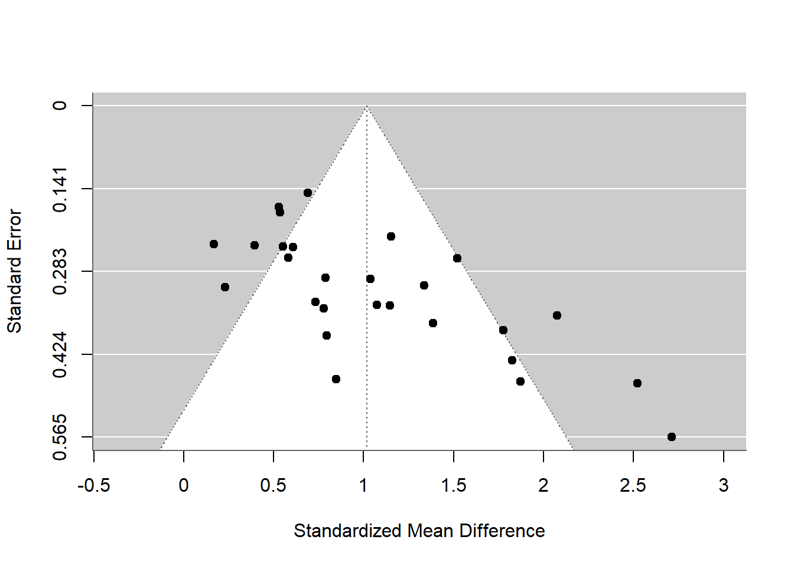

library(readxl)
file_path <- "M:/UW QF/Sem 2/Reproducible Research/RRcourse2025/11. Metaanalysis/data/metaanalysis_data.xlsx"
raw <- read_excel(file_path)
View(raw)11. Metaanalysis
ASSIGNMENT
- Import the data from the
data\metaanalysis_data.xlsxfile. The data come from the meta-analysis study: Todd et al., 2017 - Sex differences in children’s toy preferences: A systematic review, meta‐regression, and meta‐analysis
A. combine the effects
library(metafor)Loading required package: MatrixLoading required package: metadatLoading required package: numDeriv
Loading the 'metafor' package (version 4.8-0). For an
introduction to the package please type: help(metafor) df_es <- escalc(
measure = "SMD",
m1i = Mean_boys_play_male, sd1i = SD_boys_play_male, n1i = N_boys,
m2i = Mean_girls_play_male, sd2i = SD_girls_play_male, n2i = N_girls,
data = raw
)res <- rma(yi, vi, data = df_es, method = "REML")
summary(res)
Random-Effects Model (k = 27; tau^2 estimator: REML)
logLik deviance AIC BIC AICc
-24.9568 49.9137 53.9137 56.4299 54.4354
tau^2 (estimated amount of total heterogeneity): 0.2511 (SE = 0.0967)
tau (square root of estimated tau^2 value): 0.5011
I^2 (total heterogeneity / total variability): 76.54%
H^2 (total variability / sampling variability): 4.26
Test for Heterogeneity:
Q(df = 26) = 92.7894, p-val < .0001
Model Results:
estimate se zval pval ci.lb ci.ub
1.0175 0.1143 8.8997 <.0001 0.7934 1.2416 ***
---
Signif. codes: 0 '***' 0.001 '**' 0.01 '*' 0.05 '.' 0.1 ' ' 1B. create a funnel plot (what do you see?)
#funnel plot
funnel(res)
Interpretation:
The funnel plot shows more studies with positive results than negative ones, which might mean some small negative studies are missing. Smaller studies vary more and bigger ones are more consistent, which is normal. Overall, it looks like boys play more with male toys, but we should be careful because of possible bias.
C. check if methods / quality affect the results
#effect size data
df_mod <- df_es
# Convert "*" and "X" quality indicators to numeric (1 = "*", 0 = otherwise)
to_numeric_star <- function(x) ifelse(x == "*", 1, 0)
# Convert relevant quality/method indicators
df_mod$Ascertainment <- to_numeric_star(raw$`Ascertainment of behaviour`)
df_mod$Same_method <- to_numeric_star(raw$`Same ascertainment method for both groups`)
df_mod$Case_definition <- to_numeric_star(raw$`Case definition adequate`)
df_mod$Comparability <- to_numeric_star(raw$`Comparability of both groups`)
df_mod$Parental_opinion <- to_numeric_star(raw$`Parental opinion`)
df_mod$Parent_present <- as.numeric(raw$`Parent present`)
df_mod$Setting <- as.numeric(raw$Setting)
df_mod$NOS_score <- as.numeric(raw$`NOS score`)
# Test if quality scores affect effect sizes
rma(yi, vi, mods = ~ NOS_score, data = df_mod)
Mixed-Effects Model (k = 27; tau^2 estimator: REML)
tau^2 (estimated amount of residual heterogeneity): 0.2454 (SE = 0.0973)
tau (square root of estimated tau^2 value): 0.4954
I^2 (residual heterogeneity / unaccounted variability): 75.72%
H^2 (unaccounted variability / sampling variability): 4.12
R^2 (amount of heterogeneity accounted for): 2.26%
Test for Residual Heterogeneity:
QE(df = 25) = 82.7783, p-val < .0001
Test of Moderators (coefficient 2):
QM(df = 1) = 0.9375, p-val = 0.3329
Model Results:
estimate se zval pval ci.lb ci.ub
intrcpt 2.1385 1.1645 1.8365 0.0663 -0.1437 4.4208 .
NOS_score -0.1668 0.1723 -0.9683 0.3329 -0.5044 0.1708
---
Signif. codes: 0 '***' 0.001 '**' 0.01 '*' 0.05 '.' 0.1 ' ' 1# Test if specific quality indicators matter
rma(yi, vi, mods = ~ Ascertainment + Same_method + Case_definition + Comparability + Parental_opinion, data = df_mod)Warning: Redundant predictors dropped from the model.
Mixed-Effects Model (k = 27; tau^2 estimator: REML)
tau^2 (estimated amount of residual heterogeneity): 0.2782 (SE = 0.1140)
tau (square root of estimated tau^2 value): 0.5275
I^2 (residual heterogeneity / unaccounted variability): 77.69%
H^2 (unaccounted variability / sampling variability): 4.48
R^2 (amount of heterogeneity accounted for): 0.00%
Test for Residual Heterogeneity:
QE(df = 22) = 84.1058, p-val < .0001
Test of Moderators (coefficients 2:5):
QM(df = 4) = 3.3629, p-val = 0.4990
Model Results:
estimate se zval pval ci.lb ci.ub
intrcpt 0.1501 1.0478 0.1433 0.8861 -1.9036 2.2039
Ascertainment -0.0245 0.6454 -0.0379 0.9697 -1.2895 1.2405
Case_definition 0.5315 0.6649 0.7995 0.4240 -0.7716 1.8347
Comparability 0.2776 0.2818 0.9850 0.3246 -0.2748 0.8300
Parental_opinion 0.3763 0.2514 1.4970 0.1344 -0.1164 0.8691
---
Signif. codes: 0 '***' 0.001 '**' 0.01 '*' 0.05 '.' 0.1 ' ' 1# Test if setting or parent presence matter
rma(yi, vi, mods = ~ Setting + Parent_present, data = df_mod)
Mixed-Effects Model (k = 27; tau^2 estimator: REML)
tau^2 (estimated amount of residual heterogeneity): 0.2396 (SE = 0.0973)
tau (square root of estimated tau^2 value): 0.4895
I^2 (residual heterogeneity / unaccounted variability): 75.63%
H^2 (unaccounted variability / sampling variability): 4.10
R^2 (amount of heterogeneity accounted for): 4.56%
Test for Residual Heterogeneity:
QE(df = 24) = 84.2624, p-val < .0001
Test of Moderators (coefficients 2:3):
QM(df = 2) = 2.6017, p-val = 0.2723
Model Results:
estimate se zval pval ci.lb ci.ub
intrcpt 1.0589 0.5396 1.9623 0.0497 0.0013 2.1165 *
Setting 0.1818 0.1694 1.0731 0.2832 -0.1503 0.5139
Parent_present -0.1845 0.1723 -1.0711 0.2841 -0.5222 0.1531
---
Signif. codes: 0 '***' 0.001 '**' 0.01 '*' 0.05 '.' 0.1 ' ' 1Interpretation:
None of the quality or design features significantly influenced effect sizes, all p-values were above 0.1. The overall effect remained strong, and unexplained heterogeneity stayed high (I² = 76%). NOS score and other quality indicators explained very little variation (R² < 5%). In short: study differences didn’t meaningfully affect how strongly boys played with male-typed toys.